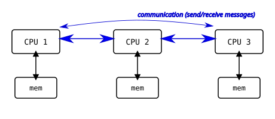

Intro to Parallel Computing
Announcements
- Course outline is on OWL; make sure you have access.
- We will use C/C++ and MPI in this course, so you need access to a computer running these.
- A Linux-like environment is needed.
- WSL (Windows Subsystem for Linux) should work for program development if you install the MPI runtime & developer packages in setup.
- On Macs, you can probably get by using the XCode package. There is also an MPI implementation you will need.
- There are some tips on OWL in the "Set-Up" file.
- You need to get a SharcNet account → see SharcNet website.
- A line terminal is needed to compile and run code.
Back in the day, computers looked like this The steering wheel is to play Mario Chariot — (not really…)
Computer Hardware Evolution
| Year | Machine | CPU | Memory | Notes |
|---|---|---|---|---|
| 1980 | Commodore VIC 20 | 1 MHz | 5 kByte RAM, 20 kByte ROM | — |
| 1995 | Gateway Pentium PC | 100 MHz (×100) | 4 MByte | Clock speed is 100 times faster than 1980 |
| 2005 | Dell Pentium PC | 2 GHz (×200) | 1 GByte | Clock speed is 20 times faster than 1995 |
| 2015 | Lenovo i7 PC | 4× 3 GHz (×1.5) | 4 GByte | Clock speed is only 1.5 times faster than 2005 BUT now we have 4 processors (multicore) and a GPU: 1526× 1 GHz (Nvidia GeForce 770) — The 1526 cores on the gpu is by far the biggest improvement |
Conclusion: To run code faster we cannot rely on hardware improvements of serial processors, we must take advantage of the multicore CPU and GPU which means we need to parallelize our code.
Reasons to Parallelize
- Time (clock time) by dividing up the work hopefully more processors working will reduce the (wall) time to run code
- Memory by dividing up the work, each process may be able to use less memory to solve a smaller part of the problem
Classification of Parallelization
By Data & Instruction Schemes
| Same Data | Multiple Data | |
|---|---|---|
| Single Instruction | SISD (serial) | SIMD |
| Multiple Instructions | MISD | MIMD |
Note: Different computer architectures may be required for different schemes, but some architectures can run different schemes.
Example ① — SISD: Single Instruction Same Data (Serial)
Compute $\displaystyle F_1 = \sum_{n=1}^N f_n$
Algorithm (sequential in time ↓):
$$ \begin{aligned} F_1 &= f_1 \ F_1 &\mathrel{+}= f_2 \ F_1 &\mathrel{+}= f_3 \ &\;\vdots \ F_1 &\mathrel{+}= f_N \end{aligned} $$
Example ② — SIMD: Single Instruction Multiple Data
Compute $A = 4 \cdot B$ where $A$, $B$ are arrays of length $n$, with $n$ divisible by 3.
Algorithm — three CPUs work in parallel (time ↓):
| CPU 1 | CPU 2 | CPU 3 |
|---|---|---|
A[1] = 4*B[1] |
A[2] = 4*B[2] |
A[3] = 4*B[3] |
A[4] = 4*B[4] |
A[5] = 4*B[5] |
A[6] = 4*B[6] |
| ⋮ | ⋮ | ⋮ |
A[n-2] = 4*B[n-2] |
A[n-1] = 4*B[n-1] |
A[n] = 4*B[n] |
The division of data is clearly not unique. Different divisions may result in faster/slower code.
Example ③ — MISD: Multiple Instruction Same Data
Moments Problem: Compute $\displaystyle F_\mu = \dfrac{1}{N} \sum_{n=1}^N f_n^\mu$ for $\mu=1,2,...,M$
Algorithm — $M$ CPUs, each computing a different power sum (time ↓):
| CPU 1 | CPU 2 | $\cdots$ | CPU M |
|---|---|---|---|
| $F_1 = f_1$ | $F_2 = f_1^2$ | $\cdots$ | $F_M = f_1^M$ |
| $F_1 \mathrel{+}= f_2$ | $F_2 \mathrel{+}= f_2^2$ | $\cdots$ | $F_M \mathrel{+}= f_2^M$ |
| $F_1 \mathrel{+}= f_3$ | $F_2 \mathrel{+}= f_3^2$ | $\cdots$ | $F_M \mathrel{+}= f_3^M$ |
| $\vdots$ | $\vdots$ | $\cdots$ | $\vdots$ |
| $F_1 \mathrel{+}= f_N$ | $F_2 \mathrel{+}= f_N^2$ | $\cdots$ | $F_M \mathrel{+}= f_N^M$ |
Example ④ — MIMD: Multiple Instruction Multiple Data
Different CPUs have different tasks and act on different data sets.
| CPU 1–10 | CPU 11–20 |
|---|---|
| Solve diffusion equation and write data at each time step to a file | Analyze output files to calculate toxicity at a given location |
Classification of Parallel Computing by Memory
Shared Memory (typical desktop today)
Distributed Memory (classic Beowulf cluster)

In practice, most systems today are some combination. However, it is useful to develop algorithms based on a single paradigm in order to make portable code.
MPI is based on a distributed memory paradigm. It provides a library of functions to facilitate communication between processors.
$$ \text{MPI} = \left{ \begin{array}{l} \text{Message} \ \text{Passing} \ \text{Interface} \end{array} \right. $$
MPI
The MPI Library consists of more than 100 functions. Of these, 6 functions are really important: 1. Initialize MPI 2. Find # of processes (specified when program submitted) 3. Find out which process I am 4. Send a message → main point of library 5. Receive a message ← main point of library 6. Terminate MPI. This is essential — always do this! MPI is C-based, not C++
Example: "Hello World" in C
#include <stdio.h>
#include "mpi.h" /* MPI header files — always need this */
main(int argc, char** argv)
{
int noprocs, nid;
MPI_Init(&argc, &argv); /* starts MPI and code
communications on all processors */
/* The following commands now run on each node independently */
MPI_Comm_size(MPI_COMM_WORLD, &noprocs);
MPI_Comm_rank(MPI_COMM_WORLD, &nid);
printf("Hello from processor %i of %i\n", nid, noprocs);
MPI_Finalize(); /* close off all the processes */
}
Comments:
MPI_Initmust be called exactly once before all other MPI commands.MPI_Finalizeshould be called after all other MPI commands.MPI_Comm_sizefinds out the number of processors (stored innoprocs).MPI_Comm_rankfinds out which process I am; $nid \in {0, \ldots, nprocs - 1}$.MPI_COMM_WORLDis an MPI "communicator".
Flowchart of What Happens
Note that once multiprocesses are running they are independent and variables like "nid" are different for each process.
The printf statement is executed on each processor independently (as are the previous 2 commands), and there is a different local version of nid and noprocs on each processor, potentially with different values.
The different processes are not typically in sync, so the output may come in any order and be different if you run the code again.
Typical compile line:
mpicc -o hello.o hello.c
Typical run command (specify # of processes, 4 in this example):
mpirun -np 4 ./hello.o
Expected output (perhaps not in this order):
Hello from processor 0 of 4
Hello from processor 1 of 4
Hello from processor 2 of 4
Hello from processor 3 of 4
MPI is a library written in C. It also has a Fortran version interface. There was a long-term effort to get a C++ version but it was buggy, largely shunned in favour of the C version, and was abandoned as unnecessary (C++ can just use the C library).
For C++ it is always a good idea to try to follow the RAII paradigm and try to automate cleanup using class destructors to take care of it. To make our C and C++ code as similar as possible, we will first rewrite hello.c to put MPI variables into a data structure and add a startup function.
Refactored C Version
#include <stdio.h>
#include "mpi.h"
struct mpi_vars { /* data structure type declaration */
int NProcs;
int MyID;
};
struct mpi_vars mpi_start(int argc, char** argv)
{
struct mpi_vars this_mpi;
MPI_Init(&argc, &argv);
MPI_Comm_size(MPI_COMM_WORLD, &this_mpi.NProcs);
MPI_Comm_rank(MPI_COMM_WORLD, &this_mpi.MyID);
return this_mpi;
}
int main(int argc, char** argv)
{
/* initialize MPI data structure using start function */
struct mpi_vars this_mpi = mpi_start(argc, argv);
printf("Hello from processor %i of %i\n",
this_mpi.MyID, this_mpi.NProcs);
MPI_Finalize();
return 0;
}
Notes:
- Only one instance of
mpi_varsshould be created (on each MPI thread). - The
mpi_startfunction should only ever be called once. - In C,
MPI_Finalize()should always be called before you exit the program.
C++ Version (RAII)
Translation of this to C++ is then very straightforward:
#include <iostream>
#include "mpi.h"
class MPI_stuff
{
public:
/* The variables we had in a mpi_vars struct in the C version: */
int NProcs;
int MyID;
/* put MPI initialization into class constructor */
MPI_stuff(int &argc, char** &argv)
{
MPI_Init(&argc, &argv);
MPI_Comm_size(MPI_COMM_WORLD, &NProcs);
MPI_Comm_rank(MPI_COMM_WORLD, &MyID);
}
/* put MPI cleanup into class destructor */
~MPI_stuff()
{
MPI_Finalize();
}
};
int main(int argc, char** argv)
{
/* MPI will be started automatically by the MPI_stuff constructor */
MPI_stuff the_mpi(argc, argv);
std::cout << "Hello from processor " << the_mpi.MyID
<< " of " << the_mpi.NProcs << std::endl;
/* the_mpi variable goes out of scope here,
so the destructor will be called to close off MPI */
return 0;
}
Notes:
- The class
MPI_stuffshould only ever have one instance in existence (but this one instance may/will have different values forMyIDon each processor). MPI_Finalizewill automatically be called whenthe_mpivariable goes out of scope (useful if the program exits in an unexpected manner too).- Compilation is typically something like
mpiCC -o hello.o hello.cpp(note: capital C's).
"Homework"
- Sign up for a Digital Research Alliance of Canada (DRA) account and online "training seminar".
- Try to get Hello World running on your machine.
- Try to get Hello World running on a DRA cluster